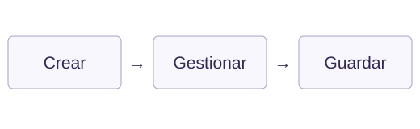
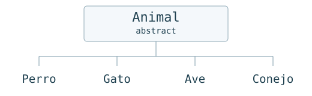

Lenguajes
HTML · CSS
JavaScript · Java
DESARROLLADORA FULL STACK JUNIOR BILINGÜE
Pienso en los detalles.
Los llevo al código.
Desde cómo se recorre un catálogo hasta cómo se organiza una clase en Java: me interesa que cada pieza tenga sentido.
CONOCE MI TRABAJO
01 / SOBRE MÍ
Me gusta participar, entender qué se necesita y proponer ideas para hacerlo.
Soy Estefania Mancipe Montañez, desarrolladora Full Stack Junior bilingüe con formación en Generation Colombia. Trabajo con HTML, CSS, JavaScript y Java. Me gusta que las páginas sean fáciles de usar y que el código esté organizado.
En VidaFit trabajé en el catálogo, las imágenes y los estilos de contacto. También hice un organizador de tareas con JavaScript y un programa de consola con Java. Estos proyectos muestran cómo uso lo que he visto en clase.
Me gusta compartir mis ideas, escuchar al equipo y corregir lo que haga falta.
MI TRABAJO EN GITHUB ↗02 / HABILIDADES
Herramientas para construir.
Idiomas para conversar.
HTML · CSS
JavaScript · Java
Bootstrap 5
DOM · localStorage
Git · GitHub
Control de versiones y contribuciones mediante pull requests.Inglés C1
Portugués A2
03 / PROYECTOS SELECCIONADOS
Tres proyectos.
Tres formas de mostrar mi trabajo.
Un catálogo para encontrar lo que necesitas.
Una tienda de productos fitness con catálogo, filtros y carrito que desarrollamos en equipo.
Trabajé en el catálogo, las imágenes y los estilos de contacto. Mi contribución quedó integrada en la pull request #9.
El frontend publicado y mi entrega en el repositorio. La integración completa con el backend sigue en desarrollo.
Mi contribución ↗Del “tengo que hacerlo” a una lista organizada.

Una agenda para registrar tareas, asignarles fecha, marcarlas como terminadas y eliminarlas.
Usé una clase llamada TaskManager para organizar las tareas. El formulario revisa los campos y guarda la lista en el navegador con localStorage.
Uso JavaScript para mostrar y actualizar las tareas. Falta guardar el cambio al marcar una tarea como terminada y publicar esta versión.
Demo de esta versión pendiente
Un mismo modelo. Distintos comportamientos.

Un programa de consola que representa especies, calcula consultas y organiza vacunación y seguros.
Creé una clase abstracta Animal y usé las interfaces Vacunable y Asegurable para indicar qué animales se pueden vacunar o asegurar.
Cada especie usa la base de Animal y tiene sus propios métodos. El programa se ejecuta en la consola.
Ejecución local · Sin demo web
04 / CONTACTO
Busco una oportunidad como desarrolladora Full Stack Junior bilingüe. Si mi trabajo encaja con tu equipo, me gustaría conversar.
ESCRÍBEME estefaniamancipe@gmail.com